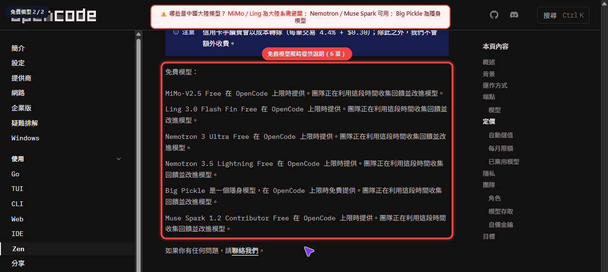
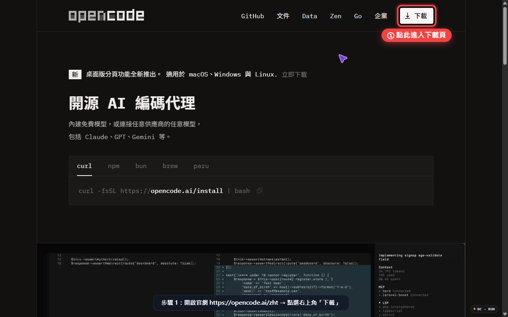
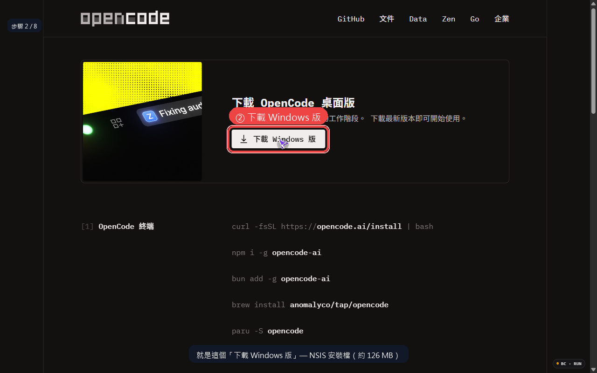
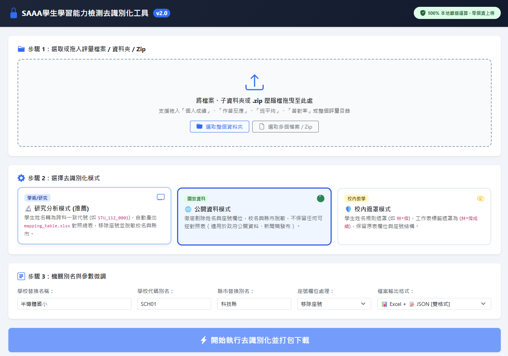

將 OpenCode 作為專屬資料分析助理，透過資料視覺化系統性發掘學生學習盲點。
請點選下列選項，系統將即時呈現統計結果。每部裝置限投一次，投後可變更選擇。
建議主持人先執行「重設示範數據」，再引導與會者同步投票，以利掌握現場情形。
本頁為單機示範模式，投票紀錄儲存於本機瀏覽器，重新載入後仍予保留。
開源 AI 編碼代理 · 美國製作
定義：OpenCode 為開源之 AI 編碼代理（AI coding agent），可於終端機、桌面應用程式、VS Code 及網頁介面中，串接大型語言模型，協助撰寫、閱讀及修改程式碼。
opencode.ai、GitHub anomalyco/opencode（MIT 授權）。程式碼公開，更新頻繁，社群活躍度高。
可介接 GPT、Claude、Gemini 及開源模型。
可批次讀取表格、轉換格式、繪製圖表及產製報表。
搭配本地模型，降低敏感資料外送之風險。
💡 縱使工具於本地端執行，若串接雲端模型，提示內容仍可能經網路傳輸；各類模型均可能蒐集資料以進行分析。
客觀呈現社群應用現況，作為導入評估之參考依據
相關教學內容於公開影音平台已累積完整系列（本剪報所示 EP07 所屬「OpenCode 基本功」播放清單計 8 部影片），主題涵蓋新版本特性與模型最佳搭配設定，顯示社群持續投入且內容具延續性。
以教育工作者「三師爸」為例，其公開分享如何以 DeepSeek V4 Flash、GPT 5.6 Luna 等模型結合 OpenCode 進行文件處理與行政資料作業，與本研習「學力資料視覺化分析」之應用路徑相符。
圖中提及「10 美金用到 60 美金的量」之用量優化經驗，反映透過模型選配與資源配置，有助降低試行成本，提升校內導入之可行性。
本頁僅就公開資訊進行客觀陳述，不代表對特定頻道或個人之背書；旨在說明 OpenCode 在臺灣已具備一定之教育應用基礎，可作為後續導入評估之參考。
聚焦 6 款限時免費模型 · 中國製 2 款 · 美國製 3 款 · 來源未公開 1 款
中國 · 小米（Xiaomi）· 限時免費並蒐集回饋以改進模型。
中國 · 金融領域微調版本 · 限時免費並蒐集回饋。
orcarouter.ai 介紹
美國 · NVIDIA · 試用性質，將記錄使用情形以改進服務。
美國 · NVIDIA · 同上，請勿提交機密內容。
來源未公開 · 隱身模型，限時免費並蒐集回饋。
美國 · Meta · 以較低費率換取得使用提示與回覆以訓練後續模型。
developer.meta.com/muse-spark

來源：opencode.ai/zen 定價與隱私權段落；付費 Zen 多為零保留（OpenAI/Anthropic 30 日）。
卡片顏色：紅=中國 綠=非中國 黃=未公開

https://opencode.ai/zh → 點選右上角「下載」請於瀏覽器輸入 https://opencode.ai/zh
首頁右上角設有白色 「↓ 下載」 按鈕（紅框標示），點選後即進入下載頁面。
若首頁顯示為英文，請於右下角切換語言為 繁體中文。

請於下載頁面中央點選 「↓ 下載 Windows 版」（紅框按鈕）。
opencode-desktop-windows-x64.exe工具：SAAA 學生學習能力檢測去識別化工具 v2.0 · 100% 本地端運算 · 零個資上傳 · 依現行個人資料保護規範辦理

將「個人成績」「作答反應」「班平均」「答對率」或整體評量目錄，以拖曳或選取方式匯入。支援單檔、多檔、整體資料夾及 .zip 壓縮檔批次處理。所有檔案於瀏覽器本地端解析，不經網路傳輸。
依資料用途擇一辦理：
研究分析模式（推薦）：學生姓名轉為跨表一致之匿名代號（如 STU_112_0001），自動產出 mapping_table.xlsx 對照表供校內留存，座號移除並對校名、縣市採脫敏處理；
公開資料模式：徹底刪除姓名與座號單位，校名與縣市脫敏且不保留任何逆對照表，適用於對外公開；
校內避難模式：姓名採規則遮罩（如 林*成），保留原始欄位與座號結構，適用於校內教學研討。請審慎擇定，一經產出難以回溯。
設定「學校替換名稱」「學校代碼別名（如 SCH01）」「縣市替換別名」、座號欄位處理（移除座號 / 保留）及檔案輸出格式（Excel + JSON 雙格式）。參數應與校內行政一致性核對，確認輸出內容無殘留可識別資訊後，再行進入後續 AI 分析流程。完成後點選「開始執行去識別化並打包下載」取得已處理之資料集。
各向度題數與答對率。
班級常模。
學生層次成績。
逐題作答情形。
標準答案。
題本。
僅 5、7 年級